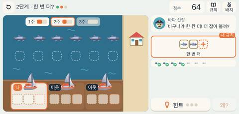
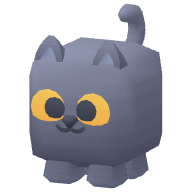
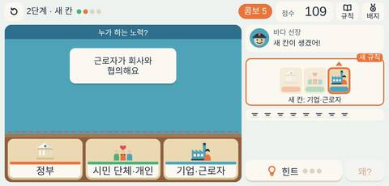

모두의 바다
매주 몇 번 바다에 나갈까? 욕심내면 바다가 비고, 마을 약속을 정하면 모두의 물고기가 많아져요.
그림: Kenney (CC0)

차게임의게임공장학생들은 어부가 되어 매주 몇 번 바다에 나갈지 정합니다. 많이 잡으면 그 주는 많지만 바다가 줄어 다음 주에 덜 잡히고, 이웃까지 따라 하면 바다가 텅 빕니다. 마지막에는 마을 약속 표지판의 횟수를 직접 골라, 함께 쓰는 자원은 함께 정한 약속으로 지켜야 모두가 더 많이 얻는다는 것을 겪습니다. 연습 게임에서는 문제 해결 노력을 정부, 시민 단체와 개인, 기업과 근로자로 나눕니다.
다루는 개념 공유지의 비극공동의 이익약속과 규칙정부의 노력기업과 근로자의 노력시민 단체와 개인의 노력

매주 몇 번 바다에 나갈까? 욕심내면 바다가 비고, 마을 약속을 정하면 모두의 물고기가 많아져요.

카드를 정부·시민 단체와 개인·기업과 근로자 칸에 나눠 담아요.